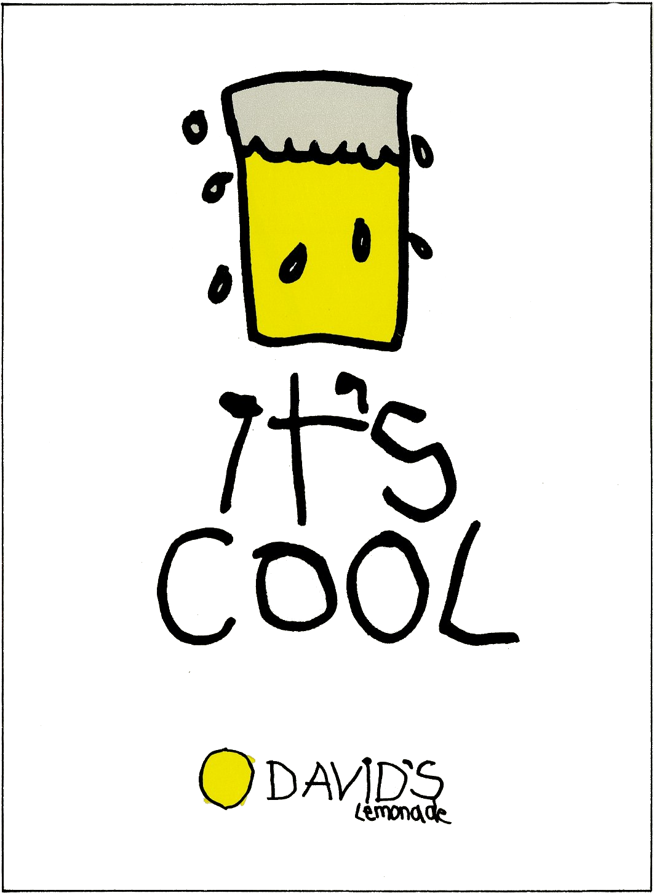

David's lemonade by Combava est une association qui regroupe un grand nombre de producteurs d’agrumes indépendants du sud de la France. Notre association propose des dégustations privées de citronnade dans toute la France. De cette manière vous pourrez goûter nos produits et nous pourrons, ensemble, mettre à l’honneur le goût unique des différents agrumes frais et bio produits localement. Les producteurs sont bien évidemment présents pour défendre leurs produits et aussi pour répondre à vos différentes interrogations.

Vous habitez à Poitiers ou aux alentours, et vous êtes intéressé par nos produits. Alors n'hésitez pas à vous inscrire et à venir le 10 septembre 2020 à l’adresse suivante :
AMAP les Grand’Goules
3 Rue des Gravières,
86000 Grand Poitiers
1/15
Vous habitez à Arpajon-sur-Cère ou aux alentours, et vous êtes intéressé par nos produits. Alors n'hésitez pas à vous inscrire et à venir le 28 septembre 2020 à l’adresse suivante :
AMAP BIO’RILLAC
27 Rue Antonin Dusserre,
15130 Arpajon-sur-Cère
2/15
Vous habitez à Wintzenheim ou aux alentours, et vous êtes intéressé par nos produits. Alors n'hésitez pas à vous inscrire et à venir le 14 octobre 2020 à l’adresse suivante :
Naturéo
37 Rue Herzog Logelbach,
68124 Wintzenheim
3/15
Vous habitez à Civray-de-Touraine ou aux alentours, et vous êtes intéressé par nos produits. Alors n'hésitez pas à vous inscrire et à venir le 20 octobre 2020 à l’adresse suivante :
AMAP Bio des 2 rives
1 Rue des Écoles,
37150 Civray-de-Touraine
4/15
Vous habitez à La Rochelle ou aux alentours, et vous êtes intéressé par nos produits. Alors n'hésitez pas à vous inscrire et à venir le 25 octobre 2020 à l’adresse suivante :
Amap des Voiliers
21 Avenue du Champ de Mars,
17000 La Rochelle
5/15
Vous habitez à Pompignac ou aux alentours, et vous êtes intéressé par nos produits. Alors n'hésitez pas à vous inscrire et à venir le 29 octobre 2020 à l’adresse suivante :
Le Pompin'Ambour
37 Lotissement Parc de Cadouin,
33370 Pompignac
6/15
Vous habitez à Maringues ou aux alentours, et vous êtes intéressé par nos produits. Alors n'hésitez pas à vous inscrire et à venir le 31 octobre 2020 à l’adresse suivante :
AMAP
13 Rue du Chéry,
63350 Maringues
7/15
Vous habitez à Biars-sur-Cère ou aux alentours, et vous êtes intéressé par nos produits. Alors n'hésitez pas à vous inscrire et à venir le 2 novembre 2020 à l’adresse suivante :
Pensees Bio
43 Avenue de la République,
46130 Biars-sur-Cère
8/15
Vous habitez à Juvignac ou aux alentours, et vous êtes intéressé par nos produits. Alors n'hésitez pas à vous inscrire et à venir le 10 novembre 2020 à l’adresse suivante :
Bio & Sens Montpellier - Juvignac
C. Cial Les Portes du Soleil, parking aérien,
46130 Allée de l'Europe, 34990 Juvignac
9/15
Vous habitez à Le Beausset ou aux alentours, et vous êtes intéressé par nos produits. Alors n'hésitez pas à vous inscrire et à venir le 15 novembre 2020 à l’adresse suivante :
Biossetan
4 Rue Paul Cézanne,
83330 Le Beausset
10/15
Vous habitez à Besançon ou aux alentours, et vous êtes intéressé par nos produits. Alors n'hésitez pas à vous inscrire et à venir le 19 novembre 2020 à l’adresse suivante :
La Canopée
3 Allée de l'Île aux Moineaux,
25000 Besançon
11/15
Vous habitez à Charleville-Mézières ou aux alentours, et vous êtes intéressé par nos produits. Alors n'hésitez pas à vous inscrire et à venir le 22 novembre 2020 à l’adresse suivante :
Rayons Verts
45 Cours Briand,
08000 Charleville-Mézières
12/15
Vous habitez à Amiens ou aux alentours, et vous êtes intéressé par nos produits. Alors n'hésitez pas à vous inscrire et à venir le 26 novembre 2020 à l’adresse suivante :
BIOMONDE
14 Rue Saint-Patrice,
80000 Amiens
13/15